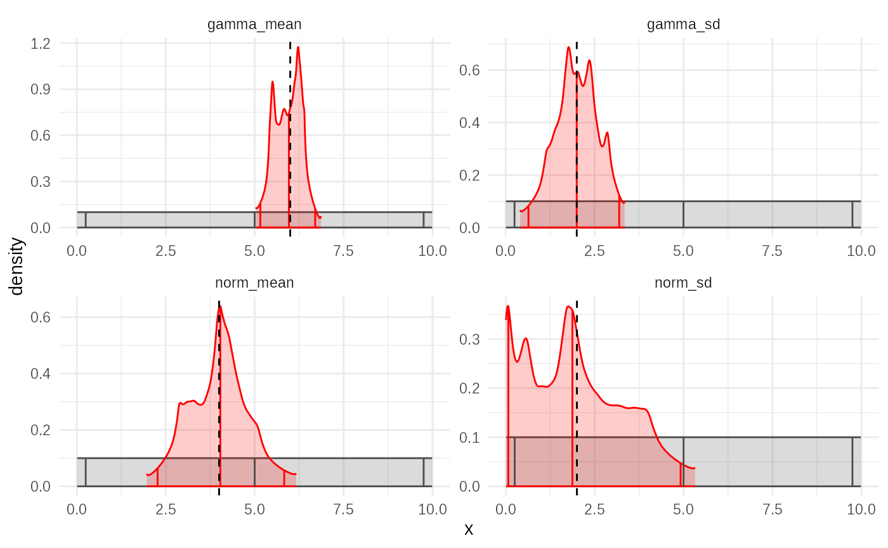

library(tidyabc)
#>
#> Attaching package: 'tidyabc'
#> The following objects are masked from 'package:base':
#>
#> transform, truncate
library(dplyr)
#>
#> Attaching package: 'dplyr'
#> The following objects are masked from 'package:stats':
#>
#> filter, lag
#> The following objects are masked from 'package:base':
#>
#> intersect, setdiff, setequal, union
library(ggplot2)
# example simulation
# Well be trying to recover norm and gamma parameters
# We'll use this function for both example generation and fitting
test_simulation_fn = function(norm_mean, norm_sd, gamma_mean, gamma_sd) {
A = rnorm(1000, norm_mean, norm_sd)
B = rgamma2(1000, gamma_mean, gamma_sd)
C = rgamma2(1000, gamma_mean, gamma_sd)
return(
list(
data1 = A + B - C,
data2 = B * C
)
)
}
test_scorer_fn = function(simdata, obsdata) {
return(list(
data1 = calculate_wasserstein(simdata$data1, obsdata$data1),
data2 = calculate_wasserstein(simdata$data2, obsdata$data2)
))
}
tmp = test_simulation(
test_simulation_fn,
test_scorer_fn,
norm_mean = 4, norm_sd=2, gamma_mean=6, gamma_sd=2,
seed = 123
)
truth = tmp$truth
test_obsdata = tmp$obsdata
ggplot(
tibble(data1 = test_obsdata$data1), aes(x=data1))+
geom_histogram(,binwidth = 1)+
xlab("A + B - C")
ggplot(tibble(data2 = test_obsdata$data2), aes(x=data2))+
geom_histogram(,binwidth = 1)+
xlab("B x C")
test_priors = priors(
norm_mean ~ unif(0, 10),
norm_sd ~ unif(0, 10),
gamma_mean ~ unif(0, 10),
gamma_sd ~ unif(0, 10),
# enforces convex gamma:
~ gamma_mean > gamma_sd
)
test_priors
#> Parameters:
#> * norm_mean: unif(min = 0, max = 10)
#> * norm_sd: unif(min = 0, max = 10)
#> * gamma_mean: unif(min = 0, max = 10)
#> * gamma_sd: unif(min = 0, max = 10)
#> Constraints:
#> * gamma_mean > gamma_sd
rejection_fit = abc_rejection(
obsdata = test_obsdata,
priors_list = test_priors,
sim_fn = test_simulation_fn,
scorer_fn = test_scorer_fn,
n_sims = 10000,
acceptance_rate = 0.01,
parallel= FALSE
)
#> ABC rejection, 1 wave.
summary(rejection_fit)
#> ABC rejection fit: single wave
#> Parameter estimates:
#> # A tibble: 4 × 4
#> # Groups: param [4]
#> param mean_sd median_95_CrI ESS
#> <chr> <chr> <chr> <dbl>
#> 1 gamma_mean 5.903 ± 0.396 5.933 [5.040 — 6.695] 78.0
#> 2 gamma_sd 1.908 ± 0.595 1.906 [0.752 — 3.113] 78.0
#> 3 norm_mean 3.991 ± 0.919 3.923 [2.067 — 6.048] 78.0
#> 4 norm_sd 2.240 ± 1.406 2.081 [0.148 — 5.713] 78.0
plot(rejection_fit, truth=truth)